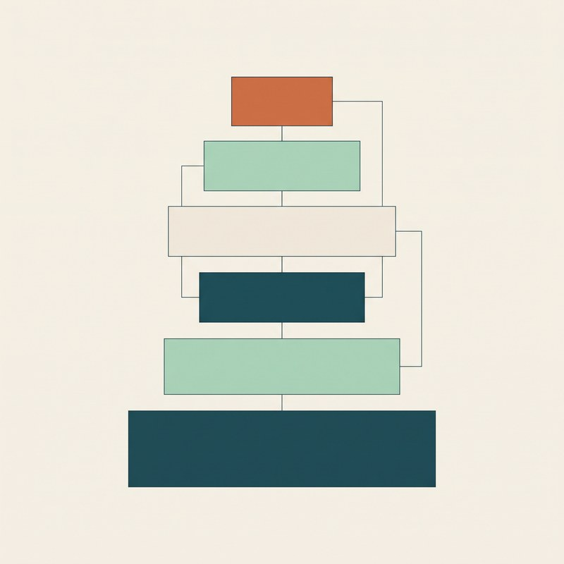

| Baustein | Was darin steht |
|---|---|
| ROLLE | Redaktionsassistenz der vhs. Liest wie eine erfahrene Lektorin, entscheidet nichts. |
| AUFGABE | Zielgruppe des Kurses bestimmen, dann prüfen, ob sie den Text verstehen kann. |
| FORMAT | Feste Ausgabe: Zielgruppe, Befunde mit Zitat, Grund und Vorschlag, Zusammenfassung. |
| GRENZEN | ! Bewertet Texte, niemals Personen. Ändert nichts, veröffentlicht nichts, erfindet nichts. |
| KONTEXT | Acht Programmbereiche, Hausabkürzungen, neun Prüfregeln, 820 Wörter des Goethe-Zertifikats A1. |
| REGELN | Namen entfernen, wörtlich zitieren, höchstens zehn Befunde, Pflicht vor Empfehlung. |
